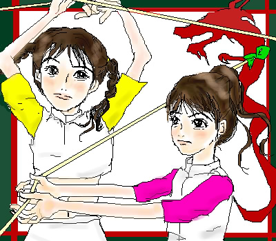

 |
15.October.2002
DJシュウさんからのリクエスト「ありちゃんとちーちゃん」です。
4000hitと、今日のお誕生日も兼ねまして、プレゼントさせて下さい♪
ありちー、でやっぱり一番印象深かったのが（と言っても最近見る事ができました）
2001年度の年末紅白合戦でした。二人は白組の大トリ！
初めて天てれ見てじわ〜っと泣きましたよ。
ほろっとちょっと感動する事は何度かあったのですが、
こんなに「すごいよ！感動したよ〜！」と感謝したのはこれが一位です。
もっと中華風な感じが出したかったんですけどね〜…。
シュウさん、お誕生日おめでとうござます！！
4000hitGETありがとうございました！